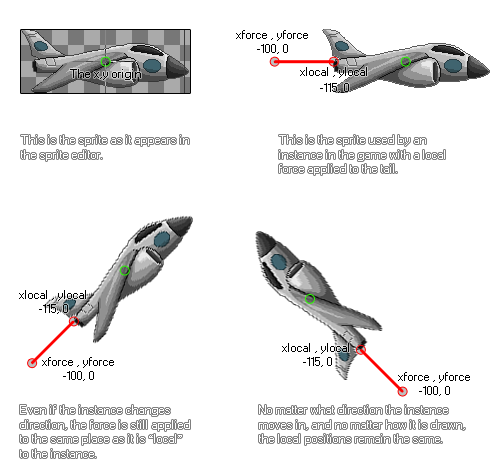

physics_apply_local_force(xlocal, ylocal, xforce, yforce)
| Argument | La description |
|---|---|
| xlocal | La coordonnée x par rapport à l'origine où la force sera appliquée |
| ylocal | La coordonnée y relative à l'origine où la force sera appliquée |
| xforce | la composante x du vecteur de force |
| yforce | la composante y du vecteur de force |
Retours: N / A
Une autre façon d'utiliser la force dans le monde de la physique est de l'appliquer localement à une instance. Cela signifie que la force et la direction de la force sont calculées en fonction de l'origine (ou de la position si elle n'a pas de sprite) de l'instance, sans tenir compte de la direction ou de la rotation dans la salle de jeu ou le monde physique. Il est à noter qu'avec cette fonction, les forces ne sont pas appliquées au centre de masse de l'objet, mais plutôt à un point relatif à l'instance et qu'elles ne seront pas appliquées instantanément car elles dépendent d'autres forces qui travaillent l'objet (comme la gravité). Cette illustration montre comment une force locale fonctionne:

Comme vous pouvez le voir, les coordonnées xlocal et ylocal sont calculées en fonction de la position de l'axe toujours considérée comme l'origine de l'instance (0,0), donc peu importe où se trouve l'objet dans la pièce, xlocal et ylocal vont toujours être le même. Vous devez ensuite décider où les composantes vectorielles de la force (xforce et yforce) doivent être positionnées par rapport à la position xlocal / ylocal. La force exacte est définie par le vecteur que nous obtenons des composants xforce / yforce par rapport à ces coordonnées - ce qui signifie simplement que la force est calculée comme la distance de xlocal / ylocal à xforce / yforce dans Newtons, et la direction est l'angle que nous obtenons de xlocal / ylocal à xforce / yforce. Cela peut sembler un peu déroutant, mais il suffit de regarder l'illustration pour voir comment cela fonctionne, et cela vous évite des calculs compliqués!
NOTE: Le monde de la physique utilise des mètres pour tous ses calculs, et le ratio de pixels par mètre est défini dans l'éditeur de pièce ou en utilisant physics_world_create.
if keyboard_check(vk_right)
{
physics_apply_local_force(-25, 0, -50, 0);
}
Le code ci-dessus appliquera une force à l'instance de 50 Newtons de gauche à droite par rapport à l'origine tandis que la touche fléchée droite est enfoncée.